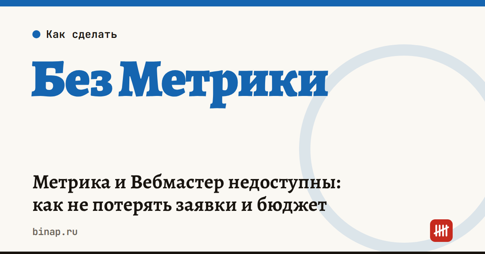

Метрика и Вебмастер недоступны: как не потерять заявки и бюджет

В октябре 2026 года после атак беспилотников на дата-центры «Яндекса» несколько дней не работали Директ, Метрика и Вебмастер: рекламодатели не видели статистику, а бюджет продолжал списываться. Сервисы восстановили, но урок остался: если вся аналитика и реклама в одном месте, сбой оставляет бизнес вслепую. Ниже — что произошло и как подготовиться к следующему сбою.
Коротко
- 8–11 октября 2026 года повреждены три дата-центра «Яндекса» (по данным «Российской газеты»).
- С 10 октября часть функций Директа, Метрики, «Яндекс Бизнеса» и AppMetrica была недоступна, а бюджет списывался (по данным «Коммерсанта»).
- Оферта Директа ограничивает ответственность «Яндекса» и называет форс-мажором последствия атак — компенсацию простоя ждать не стоит.
- Главная защита — независимый учёт заявок: CRM, телефония, метки в ссылках.
- Вебмастер — инструмент диагностики; его недоступность на позиции в поиске не влияет.
Сроки, изменения и разборы для ИП и самозанятых — каждое утро в Telegram и MAX. Подпишитесь, чтобы не пропустить.
Что произошло
- 8 октября остановлен дата-центр в Сасове, 9 октября повреждена часть инфраструктуры в Калуге, 11 октября остановлен дата-центр во Владимире (РГ).
- Управлять кампаниями и видеть свежую статистику было нельзя, а бюджет продолжал списываться («Коммерсантъ»).
- В оферте Директа с 2 октября появился пункт о форс-мажоре, в том числе о «последствиях применения боеприпасов». Ответственность «Яндекса» и раньше была ограничена 10% стоимости услуг, без упущенной выгоды.
- По данным «Коммерсанта», аукцион в VK Рекламе в эти дни подорожал на 15–20%.
План на случай сбоя рекламы и аналитики
| Риск | Что подготовить заранее |
|---|---|
| Не видно заявок | все заявки фиксируются в CRM, телефонии или таблице |
| Не видно источник | метки в ссылках, отдельные номера телефонов для каналов |
| Бюджет списывается вслепую | недельный лимит бюджета, ежедневная проверка расхода |
| Один рекламный канал | второй канал с небольшим постоянным бюджетом |
| Нет данных для отчёта | ежемесячная выгрузка статистики к себе |
Пример (расчёт редакции, цифры условные). Бюджет Директа — 3 000 ₽ в день. Если сбой длится 5 дней и заявки никто не считает, вы не знаете, во что ушли 15 000 ₽. С недельным лимитом и подсчётом заявок в CRM потери видны в первый же день.
Что сделать
- Проверьте, что каждая заявка с сайта попадает в CRM или таблицу независимо от Метрики.
- Добавьте метки в рекламные ссылки и отдельные номера телефонов для каналов.
- Поставьте недельный лимит бюджета в рекламных кабинетах.
- Раз в месяц выгружайте статистику рекламы и аналитики к себе.
- После сбоя сверьте аналитику с CRM и загрузите офлайн-конверсии, чтобы алгоритм получил пропущенные события.
Если вы продаёте через сервисы «Яндекса». ФНС тогда предупредила: часть покупателей могла временно не получить чеки, их формировали чеками коррекции после восстановления. Самозанятым на платформах «Яндекса» не нужно было пробивать чеки в «Мой налог» до 1 ноября, чтобы не задвоить доход.
Как считать стоимость клиента по каналам — CAC, LTV и ROMI. Что делать, если упал хостинг, — сайт и почта. Почему важны резервные копии — облако не смогло вернуть данные клиентов без копий.
Частые вопросы
Упадёт ли сайт в поиске из-за недоступного Вебмастера? Нет, Вебмастер — инструмент диагностики, а не фактор ранжирования.
Можно ли вернуть деньги за открутку, которую не видно? Шансов мало: оферта ограничивает ответственность «Яндекса» и прямо называет форс-мажором последствия атак.
Что важнее всего сделать заранее? Независимый учёт заявок в CRM или таблице. Тогда сбой любого сервиса аналитики не оставит вас без данных.